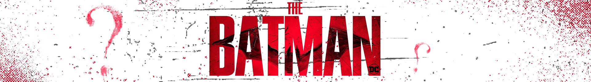

H O M E
C A S T
E X T R A S
EXTRAS
1 / 3
Bruce is in trouble...
2 / 3
The new Batmobile is here
3 / 3
Something is afoot in Liverpool
❮
❯
Image are taken from Warner Bros TM
To catch up on all things The Batman, use our social media links to find out more!
YOUTUBE
INSTAGRAM
TWITTER